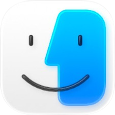
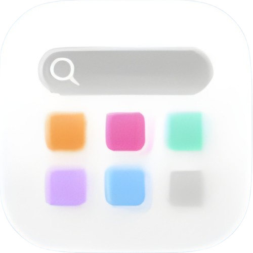
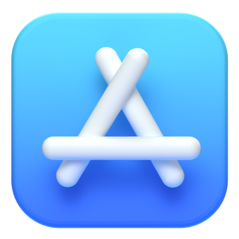
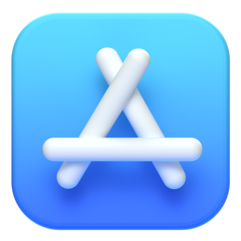
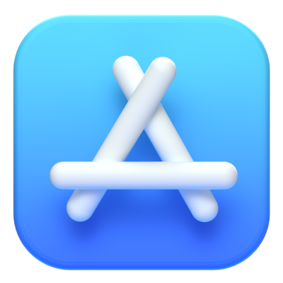

Finder
File
Edit
View
Go
Window
Help
About This Mac
System Settings...
App Store...
Recent Items
Force Quit Finder
Sleep
Restart
Shut Down
Lock Screen
Log Out
About Finder
Preferences...
Empty Trash...
Hide Finder
Hide Others
Show All
New Window
New Folder
New Tab
Open...
Open With
Close Window
Save
Save As...
Print...
Undo
Redo
Cut
Copy
Paste
Select All
Find
Spelling and Grammar
as Icons
as List
as Columns
as Gallery
Sort By
Clean Up By
Hide Toolbar
Hide Sidebar
Customize Toolbar...
Back
Forward
Applications
Documents
Downloads
Desktop
Home
Computer
AirDrop
Connect to Server...
Minimize
Zoom
Tile Window to Left of Screen
Tile Window to Right of Screen
Bring All to Front
macOS Help
About Developer
Send Feedback...
 



 
